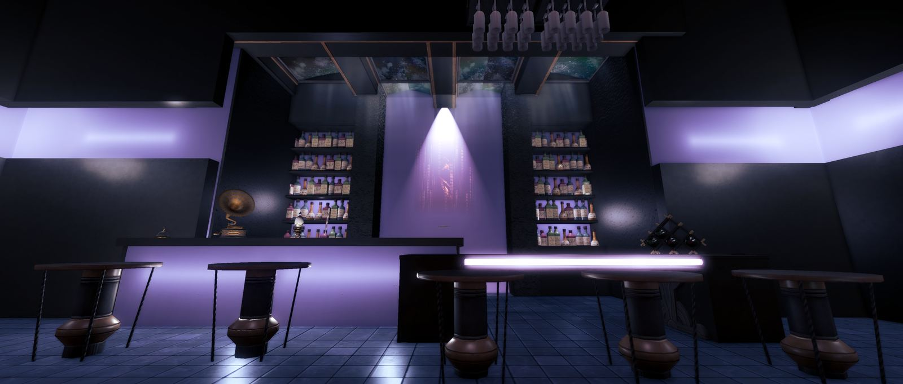

艾奧傑亞的 RP 會館。
每週五、六晚上十點開門，午夜關門。
休息日、活動與臨時調整會寫在這裡。
正在確認第十二夜的最新消息。

第十二夜是 FF14 的 RP 會館。你可以指定一位公關陪席，聊天、陪酒、輕 RP 都可以；也可以只是進來看看，拍照，點一杯飲品。
不確定怎麼開始的話，先到 Discord 跟接待說一聲，他們會告訴你今晚誰有空、適合怎麼安排。
互相尊重請尊重每位旅人與店員，不騷擾、不洗頻、不強迫互動。
收起武器與特效入館後請收起武器、寵物與大型特效，讓談話聽得清楚。
指名先確認指名陪席與專屬體驗，請先與接待或公關確認。
拍照先詢問想留下照片，請先取得同行者與店員同意。
成人向 RP涉及較私密或成人向的內容時，請確認雙方皆已成年並明確同意，同時遵守遊戲與平台規範。